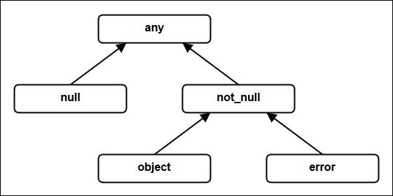

Null-Safety vs Maybe/Option - A Thorough Comparison
An in-depth and practical comparison between Null-safety and the Maybe/Option type, both used to discard the infamous null pointer error.

Image by dailyprinciples from Pixabay.
Introduction
There are two effective approaches to eliminate the daunting null pointer error:
-
The Maybe/Option pattern - mostly used in functional programming languages.
-
Compile-time null-safety - used in some modern programming languages.
This article aims to answer the following questions:
-
How does it work? How do these two approaches eliminate the null pointer error?
-
How are they used in practice?
-
How do they differ?
Readers not familiar with the concept of null might want to read first: A quick and thorough guide to 'null'.
For an introduction to Maybe / Option I recommend: F#: The Option type. You can also search the net for "haskell maybe" or "f# option".
Why Should We Care?
I call it my billion-dollar mistake. It was the invention of the null reference in 1965. ... This has led to innumerable errors, vulnerabilities, and system crashes, which have probably caused a billion dollars of pain and damage in the last forty years. ...
Tony Hoare
In the context of Java, Professor John Sargeant from the Manchester school of computer science puts it like this:
Of the things which can go wrong at runtime in Java programs, null pointer exceptions are by far the most common.
John Sargeant
We can easily deduce:
By eliminating the infamous null pointer error, we eliminate one of the most frequent reasons for software failures.
That's a big deal!
We should care about it.
Three Approaches
Besides showing the reason for the null pointer error, this article also aims to demonstrate how the null pointer error can be eliminated.
We will therefore compare three different approaches:
-
The language uses
null, but doesn't provide null-safety.In these languages null pointer errors occur frequently.
Most popular languages fall into this category. For example: C, C++, Java, Javascript, PHP, Python, Ruby, Visual Basic.
-
The language doesn't support
null, but usesMaybe(also calledOptionorOptional) to represent the 'absence of a value'.As
nullis not supported, there are no null pointer errors.This approach is mostly used in some functional programming languages. But it can as well be used in non-functional languages.
At the time of writing, the most prominent languages using this approach are probably Haskell, F#, and Swift.
-
The language uses null and provides compile-time-null-safety.
Null pointer errors cannot occur.
Some modern languages support this approach.
Source Code Examples
In this chapter we'll look at some source code examples of common use cases involving 'the absence of a value'. We will compare the code written in the three following languages representing the three approaches mentioned in the previous chapter:
-
Java (supports null, but not null-safe)
Java is one of the industry's leading languages, and one of the most successful ones in the history of programming languages. But it isn't null-safe. Hence, it is well suited to demonstrate the problem of the null pointer error.
-
Haskell (Maybe type)
Haskell is the most famous one in the category of pure functional languages. It doesn't support
null. Instead it uses theMaybemonad to represent the 'absence of a value'.NoteI am by no means a Haskell expert. If you see any mistake or need for improvement in the following examples, then please leave a comment so that the article can be updated.
-
PPL (supports null and is null-safe)
The Practical Programming Language (PPL) supports
nulland has been designed with full support for compile-time-null-safety from the ground up. However, be warned! PPL is just a work in progress, not ready yet to write mission-critical enterprise applications. I use it in this article because (full disclosure!) I am the creator of PPL, and I want to initiate some interest for it. I hope you don't mind - after reading this article.
All source code examples are available on Github. The Github source code files contain alternative solutions for some examples, not shown in this article.
Null-Safety
How does null-safety work in practice? Let's see.
Null Not Allowed
We start with an example of code where null is not allowed.
Say we want to write a very simple function that takes a positive integer and returns a string. Neither the input nor the output can be null. If the input value is 1, we return "one". If it is not 1, we return "not one". How does the code look like in the three languages? And, more importantly, how safe is it?
Java
This is the function written in Java:
static String intToString ( Integer i ) {
if ( i == 1 ) {
return "one";
} else {
return "not one";
}
}We can use the ternary operator and shorten the code a bit:
static String intToString ( Integer i ) {
return i == 1 ? "one" : "not one";
}I am using type Integer, which is a reference type. I am not using type int, which is a value type. The reason is that null works only with reference types.
To test the code, we can write a simple Java application like this:
public class NullNotAllowedTest {
static String intToString ( Integer i ) {
return i == 1 ? "one" : "not one";
}
public static void main ( String[] args ) {
System.out.println ( intToString ( 1 ) );
System.out.println ( intToString ( 2 ) );
}
}If you want to try out this code you can use an online Java Executor like this one. Just copy/paste the above code in the Source File tab, and click Execute. It looks like this:
If you have Java installed on your system, you can also proceed like this:
-
Save the above code in file
NullNotAllowedTest.java. -
Compile and run it by typing the following two commands in a terminal:
javac NullNotAllowedTest.java java NullNotAllowedTest
The output written to the OS out device is:
one not one
So far so good.
Haskell
In Haskell, there are a few ways to write the function. For example:
intToString :: Integer -> String
intToString i = case i of
1 -> "one"
_ -> "not one"The first line in the above code could be omitted, because Haskell supports type inference for function arguments. However, it's considered good style to include the type signature, because it makes the code more readable. Hence, we will always include the type signature in the upcoming Haskell examples.
The above code uses pattern matching, which is the idiomatic way to write code in Haskell.
We can write a simple Haskell application to test the code:
intToString :: Integer -> String
intToString i = case i of
1 -> "one"
_ -> "not one"
main :: IO ()
main = do
putStrLn $ intToString 1
putStrLn $ intToString 2As for Java, you can use an online Haskell executor to try out the code. Here is a screenshot:
Alternatively, if Haskell is installed on your system, you can save the above code in file NothingNotAllowedTest.hs. Then you can compile and run it with these two commands:
ghc -o NothingNotAllowedTest NothingNotAllowedTest.hs NothingNotAllowedTest.exe
The output is the same as in the Java version:
one not one
PPL
In PPL the function can be written like this:
function int_to_string ( i pos_32 ) -> string
if i =v 1 then
return "one"
else
return "not one"
.
.The comparison operator =v in the above code is suffixed with a v to make it clear we are comparing values. If we wanted to compare references, we would use operator =r.
We can shorten the code by using an if-then-else expression (instead of an if-then-else statement):
function int_to_string ( i pos_32 ) -> string = \
if i =v 1 then "one" else "not one"A simple PPL application to test the code looks like this:
function int_to_string ( i pos_32 ) -> string = \
if i =v 1 then "one" else "not one"
function start
write_line ( int_to_string ( 1 ) )
write_line ( int_to_string ( 2 ) )
.At the time of writing there is no online PPL executor available. To try out code you have to install PPL and then proceed like this:
-
Save the above code in file
null_not_allowed_test.ppl -
Compile and run the code in a terminal by typing:
ppl null_not_allowed_test.ppl
Again, the output is:
one not one
Discussion
As we have seen (and expected), the three languages allow us to write 'code that works correctly'. Here is a reprint of the three versions, so that you can easily compare the three versions:
-
Java
static String intToString ( Integer i ) { return i == 1 ? "one" : "not one"; } -
Haskell
intToString :: Integer -> String intToString i = case i of 1 -> "one" _ -> "not one" -
PPL
function int_to_string ( i pos_32 ) -> string = \ if i =v 1 then "one" else "not one"
A pivotal question remains unanswered:
What happens in case of a bug in the source code?
The Crucial Question
In the context of this article we want to know: What happens if the function is called with null as input? And what if the function returns null?
This question is easy to answer in the Haskell world. null doesn't exist in Haskell. Haskell uses the Maybe monad to represent the 'absence of a value'. We will soon see how this works. Hence, in Haskell it is not possible to call intToString with a null as input. And we can't write code that returns null.
PPL supports null, unlike Haskell. However, all types are non-null by default. This is a fundamental rule in all effective null-safe languages. A PPL function with the type signature pos_32 -> string states that the function cannot be called with null as input, and it cannot return null. This is enforced at compile-time, so we are on the safe side. Code like int_to_string ( null ) simply doesn't compile.
By default all types are non-null in a null-safe language.
By default it is illegal to assign
null.The 'non-null by default' rule
What about Java?
Java is not null-safe. Every type is nullable, and there is no way to specify a non-null type for a reference. This means that intToString can be called with null as input. Moreover, nothing prevents us from writing code that returns null from intToString.
So, what happens if we make a function call like intToString ( null )? The program compiles, but the disreputable NullPointerException is thrown at run-time:
Exception in thread "main" java.lang.NullPointerException
at NullNotAllowedTest.intToString(NullNotAllowedTest.java:4)
at NullNotAllowedTest.main(NullNotAllowedTest.java:10)
Why? The test i == 1 is equivalent to i.compareTo ( new Integer(1) ). But i is null in our case. And executing a method on a null object is impossible and generates a NullPointerException.
This is the well-known reason for the infamous billion-dollar mistake.
What if intToString accidentally returns null, as in the following code:
public class NullNotAllowedTest {
static String intToString ( Integer i ) {
return null;
}
public static void main ( String[] args ) {
System.out.println ( intToString ( 1 ) );
}
}Again, no compiler error. But a runtime error occurs, right? Wrong, the output is:
null
Why?
The reason is that System.out.println has been programmed to write the string "null" if it is called with null as input. The method signature doesn't show this, but it is clearly stated in the Java API documentation: "If the argument is null then the string 'null' is printed.".
What if instead of printing the string returned by intToString, we want to print the string's size (i.e. the number of characters). Let's try it by replacing ...
System.out.println ( intToString ( 1 ) );... with this:
System.out.println ( intToString ( 1 ).length() );Now the program doesn't continue silently. A NullPointerException is thrown again, because the program tries to execute length() on a null object.
As we can see from this simple example, the result of misusing null is inconsistent.
In the real world, the final outcome of incorrect null handling ranges from totally harmless to totally harmful, and is often unpredictable. This is a general, and frustrating property of all programming languages that support null, but don't provide compile-time-null-safety. Imagine a big application with thousands of functions, most of them much more complex than our simple toy code. None of these functions are implicitly protected against misuses of null. It is understandable why null and the "billion dollar mistake" have become synonyms for many software developers.
We can of course try to improve the Java code and make it a bit more robust. For example, we could explicitly check for a null input in method intToString and throw an IllegalArgumentException. We could also add a NonNull annotation that can be used by some static code analyzers or super-sophisticated IDEs. But all these improvements require manual work, might depend on additional tools and libraries, and don't lead to a satisfactory and reliable solution. Therefore, we will not discuss them. We are not interested in mitigating the problem of the null pointer error, we want to eliminate it. Completely!
Null Allowed
Let's slightly change the specification of function int_to_string. We want it to accept null as input and return:
-
"one"if the input is 1 -
"not one"if the input is not 1 and notnull -
nullif the input isnull
How does this affect the code in the three languages?
Java
This is the new code written in Java:
static String intToString ( Integer i ) {
if ( i == null ) {
return null;
} else {
return i == 1 ? "one" : "not one";
}
}We could again use the ternary operator and write more succinct code:
static String intToString ( Integer i ) {
return i == null ? null : i == 1 ? "one" : "not one";
}Whether to chose the first or second version is a matter of debate. As a general rule, we should value readability more than terseness of code. So, let's stick with version 1.
The crucial point here is that the function's signature has not changed, although the function's specification is now different. Whether the function accepts and returns null or not, the signature is the same:
String intToString ( Integer i ) {This doesn't come as a surprise. As we saw already in the previous example, Java (and other languages without null-safety) doesn't make a difference between nullable and non-nullable types. All types are always nullable. Hence by just looking at a function signature we don't know if the function accepts null as input, and we don't know if it might return null. The best we can do is to document nullability for each input/output argument. But there is no compile-time protection against misuses.
To check if it works, we can write a simplistic test application:
public class NullAllowedTest {
static String intToString ( Integer i ) {
if ( i == null ) {
return null;
} else {
return i == 1 ? "one" : "not one";
}
}
static void displayResult ( String s ) {
String result = s == null ? "null" : s;
System.out.println ( "Result: " + result );
}
public static void main ( String[] args ) {
displayResult ( intToString ( 1 ) );
displayResult ( intToString ( 2 ) );
displayResult ( intToString ( null ) );
}
}Output:
Result: one Result: not one Result: null
Haskell
This is the code in Haskell:
intToString :: Maybe Integer -> Maybe String
intToString i = case i of
Just 1 -> Just "one"
Nothing -> Nothing
_ -> Just "not one"Key points:
-
Haskell doesn't support
null. It uses theMaybemonad.The Maybe type is defined as follows:
data Maybe a = Just a | Nothing deriving (Eq, Ord)The Haskell doc states: "The
Maybetype encapsulates an optional value. A value of typeMaybe aeither contains a value of typea(represented asJust a), or it is empty (represented asNothing). TheMaybetype is also a monad."NoteMore information can be found here and here. Or you can read about the Option type in F#.
-
The function signature clearly states that calling the function with no integer (i.e. the value
Nothingin Haskell) is allowed, and the function might or might not return a string. -
For string values the syntax
Just "string"is used to denote a string, andNothingis used to denote 'the absence of a value'. Analogously, the syntaxJust 1andNothingis used for integers. -
Haskell uses pattern matching to check for 'the absence of a value' (e.g.
Nothing ->). The symbol_is used to denote 'any other case'. Note that the_case includes theNothingcase. Hence if we forget the explicit check forNothingthere will be no compiler error, and"not one"will be returned if the function is called withNothingas input.
Here is a simple test application:
import Data.Maybe (fromMaybe)
intToString :: Maybe Integer -> Maybe String
intToString i = case i of
Just 1 -> Just "one"
Nothing -> Nothing
_ -> Just "not one"
displayResult :: Maybe String -> IO()
displayResult s =
putStrLn $ "Result: " ++ fromMaybe "null" s
main :: IO ()
main = do
displayResult $ intToString (Just 1)
displayResult $ intToString (Just 2)
displayResult $ intToString (Nothing)Output:
Result: one Result: not one Result: null
Note the fromMaybe "null" s expression in the above code. In Haskell this is a way to provide a default value in case of Nothing. It's conceptually similar to the expression s == null ? "null" : s in Java.
PPL
In PPL the code looks like this:
function int_to_string ( i pos_32 or null ) -> string or null
case value of i
when null
return null
when 1
return "one"
otherwise
return "not one"
.
.A case expression will be available in a future version of PPL (besides the case statement shown above). Then the code can be written more concisely as follows:
function int_to_string ( i pos_32 or null ) -> string or null = \
case value of i
when null: null
when 1 : "one"
otherwise: "not one"Key points:
-
In PPL
nullis a regular type (likestring,pos_32, etc.) that has one possible value:null.It appears as follows in the top of PPL's type hierarchy:
 -
PPL supports union types (also called sum types, or choice types). For example, if a reference can be a string or a number, the type is
string or number.That's why we use the syntax
pos_32 or nullandstring or nullto denote nullable types. The typestring or nullsimply means that the value can be any string ornull. -
The function clearly states that it accepts
nullas input, and that it might returnnull. -
We use a
caseinstruction to check the input and return an appropriate string. The compiler ensures that each case is covered in thewhenclauses. It is not possible to accidentally forget to check fornull, because (in contrats to Haskell) theotherwiseclause doesn't cover thenullclause.
A simple test application looks like this:
function int_to_string ( i pos_32 or null ) -> string or null
case value of i
when null
return null
when 1
return "one"
otherwise
return "not one"
.
.
function display_result ( s string or null )
write_line ( """Result: {{s if_null: "null"}}""" )
.
function start
display_result ( int_to_string ( 1 ) )
display_result ( int_to_string ( 2 ) )
display_result ( int_to_string ( null ) )
.Output:
Result: one Result: not one Result: null
Note the """Result: {{s if_null: "null"}}""" expression used in function display_result. We use string interpolation: an expression embedded between a {{ and }} pair. And we use the if_null: operator to provide a string that represents null. Writing s if_null: "null" is similar to s == null ? "null" : s in Java.
If we wanted to print nothing in case of null, we could code """Result: {{? s}}"""
Discussion
Again, the three languages allow us to write code that works correctly.
But there are some notable differences:
-
In Haskell and PPL, the functions clearly state that 'the absence of a value' is allowed (i.e.
Nothingin Haskell, ornullin PPL). In Java, there is no way to make a difference between nullable and non-nullable arguments (except via comments or annotations, of course). -
In Haskell and PPL, the compiler ensures we don't forget to check for 'the absence of a value'. Executing an operation on a possibly
Nothingornullvalue is not allowed. In Java we are left on our own.
Here is a comparison of the three versions of function int_to_string:
-
Java
static String intToString ( Integer i ) { if ( i == null ) { return null; } else { return i == 1 ? "one" : "not one"; } } -
Haskell
intToString :: Maybe Integer -> Maybe String intToString i = case i of Just 1 -> Just "one" Nothing -> Nothing _ -> Just "not one" -
PPL
New version (not available yet):
function int_to_string ( i pos_32 or null ) -> string or null = \ case value of i when null: null when 1 : "one" otherwise: "not one"Current version:
function int_to_string ( i pos_32 or null ) -> string or null case value of i when null return null when 1 return "one" otherwise return "not one" . .
And here is the function used to display the result:
-
Java
static void displayResult ( String s ) { String result = s == null ? "null" : s; System.out.println ( "Result: " + result ); } -
Haskell
import Data.Maybe (fromMaybe) displayResult :: Maybe String -> IO() displayResult s = putStrLn $ "Result: " ++ fromMaybe "null" s -
PPL
function display_result ( s string or null ) write_line ( """Result: {{s if_null: "null"}}""" ) .
Useful Null-Handling Features
Besides null-safety, a language should also provide specific support for common null handling operations. Let's have a look at some examples.
The additional support for null-handling presented in the following chapters is typically found only in null-safe languages. However, other languages can also provide these features, even if they are not null-safe.
Searching the First Non-Null Value
Suppose we want to look up a discount for a customer. First we try to retrieve the value from a web-service. If the value is not available (i.e. the result is null), we try to retrieve it from a database, then from a local cache. If the value is still null we use a default value of 0.0.
Now we want to write a function that provides the discount for a given customer. To keep the example simple, we ignore error-handling. Moreover, we don't use asynchronous functions to make the lookup process faster.
Java
First attempt:
static Double customerDiscount ( String customerID ) {
Double result = discountFromNet ( customerID );
if ( result != null ) {
return result;
} else {
result = discountFromDB ( customerID );
if ( result != null ) {
return result;
} else {
result = discountFromCache ( customerID );
if ( result != null ) {
return result;
} else {
return 0.0; // default value
}
}
}
}What an ugly monstrosity! Let's quickly rewrite it:
static Double customerDiscount ( String customerID ) {
Double result = discountFromNet ( customerID );
if ( result != null ) return result;
result = discountFromDB ( customerID );
if ( result != null ) return result;
result = discountFromCache ( customerID );
if ( result != null ) return result;
return 0.0; // default value
}There's nothing wrong with using several return statement, as in the code above (although some people might disagree).
The complete Java source code for a test application is available here.
Haskell
Let's start again with the straightforward, but ugly version:
customerDiscount :: String -> Float
customerDiscount customerID =
case (discountFromNet customerID) of
Just d -> d
Nothing -> case (discountFromDB customerID) of
Just d -> d
Nothing -> case (discountFromCache customerID) of
Just d -> d
Nothing -> 0.0There are different ways to write better code. Here is one way:
customerDiscount :: String -> Float
customerDiscount customerID =
let discountMaybe = discountFromNet customerID
<|> discountFromDB customerID
<|> discountFromCache customerID
in fromMaybe 0.0 discountMaybeThe complete Haskell source code for a test application, including alternative ways to write the above function, is available here.
More information (and even more alternatives) can be found in the Stackoverflow question Using the Maybe Monad in reverse.
PPL
Again, first the ugly version:
function customer_discount ( customer_id string ) -> float_64
if discount_from_net ( customer_id ) as net_result is not null then
return net_result
else
if discount_from_DB ( customer_id ) as DB_result is not null then
return DB_result
else
if discount_from_cache ( customer_id ) as cache_result is not null then
return cache_result
else
return 0.0
.
.
.
.The code becomes a one-liner and more readable with the practical if_null: operator designed for this common use case:
function customer_discount ( customer_id string ) -> float_64 = \
discount_from_net ( customer_id ) \
if_null: discount_from_DB ( customer_id ) \
if_null: discount_from_cache ( customer_id ) \
if_null: 0.0The if_null: operator works like this: It evaluates the expression on the left. If the result is non-null, it returns that result. Else it returns the expression on the right.
In our example we use a chain of if_null: operators to find the first non-null value. If the three functions called in the expression return null, we return the default value 0.0.
The complete PPL source code for a test application is available here.
Getting a Value in a Path With Nulls
Sometimes we need to do the opposite of what we did in the previous chapter. Instead of stopping at the first non-null value, we continue until we've found the last non-null value.
For example, suppose a customer record type with two attributes:
-
name: a non-null string -
address: a nullable address
Record type address is defined as follows:
-
city: a nullable string -
country: a non-null string
Now we want to create a function that takes a customer as input, and returns the number of characters in the customer's city. If the customer's address attribute is null, or if the address's city attribute is null then the function should return 0.
Java
These are the record types written in idiomatic Java:
static class Customer {
private final String name;
private final Address address;
public Customer ( String name, Address address) {
this.name = name;
this.address = address;
}
public String getName() { return name; }
public Address getAddress() { return address; }
}
static class Address {
private final String city;
private final String country;
public Address ( String city, String country) {
this.city = city;
this.country = country;
}
public String getCity() { return city; }
public String getCountry() { return country; }
}We don't use setters because we want our types to be immutable.
As seen already, all types are nullable in Java. We cannot explicitly specify if null is allowed for class fields.
Function (method) customerCitySize can be implemented as follows:
static Integer customerCitySize ( Customer customer ) {
Address address = customer.getAddress();
if ( address == null ) return 0;
String city = address.getCity();
if ( city == null ) return 0;
return city.length();
}Alternatively we could have used nested if statements, but the above version is more readable and avoids the complexity of nested statements.
We can write a simplistic test:
public static void main ( String[] args ) {
// city is non-null
Address address = new Address ( "Orlando", "USA" );
Customer customer = new Customer ( "Foo", address );
System.out.println ( customerCitySize ( customer ) );
// city is null
address = new Address ( null, "USA" );
customer = new Customer ( "Foo", address );
System.out.println ( customerCitySize ( customer ) );
// address is null
customer = new Customer ( "Foo", null );
System.out.println ( customerCitySize ( customer ) );
}Output:
7 0 0
Seems to work!
The whole Java source code is available here.
Haskell
Defining the record types is easy:
data Customer = Customer {
name :: String,
address :: Maybe Address
}
data Address = Address {
city :: Maybe String,
country :: String
}There are several ways to write function customerCitySize in Haskell. Here is, I think, the most readable one for people more familiar with imperative programming. It uses the do notation:
import Data.Maybe (fromMaybe)
customerCitySize :: Customer -> Int
customerCitySize customer =
let sizeMaybe = do
address <- address customer -- type Address
city <- city address -- type String
return $ length city -- type Maybe Int
in fromMaybe 0 sizeMaybeHere is a version that doesn't use the do notation:
customerCitySize :: Customer -> Int
customerCitySize customer =
let addressMaybe = address customer -- type Maybe Address
cityMaybe = addressMaybe >>= city -- type Maybe String
sizeMaybe = length <$> cityMaybe -- type Maybe Int
in fromMaybe 0 sizeMaybeIf we are careful with operator precedence, we can shorten the code:
customerCitySize :: Customer -> Int
customerCitySize customer =
fromMaybe 0 $ length <$> (address customer >>= city)Instead of using fromMaybe we can use maybe to provide the default value:
customerCitySize :: Customer -> Int
customerCitySize customer =
maybe 0 length $ address customer >>= cityYes, this code is concise. But there is a lot going on behind the scenes. A looooot!. To really understand the above code one has to understand Haskell. And yes, we use a monad, indicated by the bind operator >>= in the code. For more information please refer to Haskell's documentation.
We can write a quick test:
main :: IO ()
main = do
-- city is defined
let address1 = Address {city = Just "Orlando", country = "USA"}
let customer1 = Customer {name = "Foo", address = Just address1}
putStrLn $ show $ customerCitySize customer1
-- city is not defined
let address2 = Address {city = Nothing, country = "USA"}
let customer2 = Customer {name = "Foo", address = Just address2}
putStrLn $ show $ customerCitySize customer2
-- address is not defined
let customer3 = Customer {name = "Foo", address = Nothing}
putStrLn $ show $ customerCitySize customer3Again, the output is:
7 0 0
The whole Haskell source code is available here. There are also two examples of customerCitySize implementations that compile without errors, but produce wrong results.
PPL
First, the record types:
record type customer
attributes
name string
address address or null
.
.
record type address
attributes
city string or null
country string
.
.Function customerCitySize is written like this:
function customer_city_size ( customer ) -> zero_pos_32 =
customer.address.null?.city.null?.size if_null: 0Note the embedded null? checks. The evaluation of customer.address.null?.city.null?.size stops as soon as a null is detected in the chain. In that case, the whole expression evaluates to null.
The if_null: operator is used to return the default value 0 if the expression on the left evaluates to null.
Instead of .null?. we can also simply write ?.. Hence the function can be shortened to:
function customer_city_size ( customer ) -> zero_pos_32 =
customer.address?.city?.size if_null: 0Simple test code looks like this:
function start
// city is non-null
const address1 = address.create ( city = "Orlando", country = "USA" )
const customer1 = customer.create ( name = "Foo", address = address1 )
write_line ( customer_city_size ( customer1 ).to_string )
// city is null
const address2 = address.create ( city = null, country = "USA" )
const customer2 = customer.create ( name = "Foo", address = address2 )
write_line ( customer_city_size ( customer2 ).to_string )
// address is null
const customer3 = customer.create ( name = "Foo", address = null )
write_line ( customer_city_size ( customer3 ).to_string )
.Output:
7 0 0
The whole PPL source code is available here.
Comparison
Here is a copy of the three implementations:
-
Java
static Integer customerCitySize ( Customer customer ) { Address address = customer.getAddress(); if ( address == null ) return 0; String city = address.getCity(); if ( city == null ) return 0; return city.length(); } -
Haskell
customerCitySize :: Customer -> Int customerCitySize customer = maybe 0 length $ address customer >>= city -
PPL
function customer_city_size ( customer ) -> zero_pos_32 = customer.address?.city?.size if_null: 0
Comparisons
Now that we know how the null pointer error is eliminated, let us look at some differences between using the Maybe monad in Haskell and null-safety in PPL.
The following discussion is based on the Haskell and PPL examples shown in the previous chapters. Hence, some of the following observations are not valid in other languages that work in a similar way. For example, F#'s Option type is very similar to Haskell's Maybe type, but these two languages are far from being the same. Reader comments about other languages are of course very welcome.
Source Code
Here is a summary of the differences we saw in the source code examples.
Declaring the type of a nullable reference
Haskell: Maybe string (other languages use Option or Optional)
PPL: string or null (other languages use string?)
As seen already, the difference between Haskell and PPL is not just syntax. Both use different concepts.
Haskell uses the Maybe type with a generic type parameter. Form the Haskell doc.: "A value of type Maybe a either contains a value of type a (represented as Just a), or it is empty (represented as Nothing). The Maybe type is also a monad."
On the other hand, PPL uses union types to state that a value is either a specific type, or null.
A non-null value used for a nullable type
Haskell: Just "qwe" (other languages: Some "qwe")
PPL: "qwe"
This difference is important!
In Haskell "qwe" is not type compatible to Just "qwe". Suppose the following function signature:
foo :: Maybe String -> StringThis function can be called as follows:
foo $ Just "qwe"But a compiler error arises if we try to call it like this:
foo "qwe"There are a few consequences to be aware of.
First, if a type changes from Maybe T to T, then all occurrences of Just expression must be changed to expression. The inverse is true too. A change from type T to Maybe T requires all occurrences of expression to be refactored to Just expression.
This is not the case in PPL. An expression of type string is type-compatible to an expression of string or null (but the inverse is not true). For example, the function ...
foo ( s string or null ) -> string... can be called like this:
foo ( "qwe" )If the function is later refactored to ...
foo ( s string ) -> string... then it can still be called with:
foo ( "qwe" )Secondly, in Haskell some functions with the same name might exist for input type Maybe T, as well as for input T. But the semantics are different. For example, length "qwe" returns 3 in Haskell, while length $ Just "qwe" returns 1. It is important to be aware of this, because there is no compile-time error if function length is used for an expression whose type changes from Maybe T to T or vice-versa.
Thirdly, one has to be aware of the possibility of nested Maybes in Haskell. For example, suppose again we declare:
data Customer = Customer {
name :: String,
address :: Maybe Address
}
data Address = Address {
city :: Maybe String,
country :: String
}What is the return type of the following function?
customerCity customer = city <$> address customerIs it Maybe string. No, it's Maybe ( Maybe string ) - a nested Maybe. Ignoring this can lead to subtle bugs. For an interesting discussion see the Stackoverflow question Simplifying nested Maybe pattern matching.
'No value' symbol
Haskell: Nothing (other languages: None)
PPL: null (other languages: nil, void, ...)
Checking for null
Haskell (one way to do it):
intToString :: Maybe Integer -> Maybe String
intToString i = case i of
Just 1 -> Just "one"
Nothing -> Nothing
_ -> Just "not one" Note: Omitting the Nothing case does not produce a compiler error. Instead, the function returns Just "not one" if it is called with Nothing as input.
PPL (new version):
function int_to_string ( i pos_32 or null ) -> string or null = \
case value of i
when null: null
when 1 : "one"
otherwise: "not one"Note: Omitting the when null case results in the following compiler error:
Clause 'when null' is required because the case expression might be null at run-time.
Providing a default non-null value
Haskell: fromMaybe 0 size (requires Data.Maybe; F#: defaultArg 0 size)
PPL: size if_null: 0 (other languages: size ?: 0, ( ?: is sometimes called 'Elvis operator')
Getting the first non-null value in a chain, or else a default value
Haskell:
customerDiscount :: String -> Float
customerDiscount customerID =
let discountMaybe = discountFromNet customerID
<|> discountFromDB customerID
<|> discountFromCache customerID
in fromMaybe 0.0 discountMaybePPL:
function customer_discount ( customer_id string ) -> float_64 = \
discount_from_net ( customer_id ) \
if_null: discount_from_DB ( customer_id ) \
if_null: discount_from_cache ( customer_id ) \
if_null: 0.0Getting the last value in a chain, or else a default value
Haskell:
customerCitySize :: Customer -> Int
customerCitySize customer =
maybe 0 length $ address customer >>= cityPPL:
function customer_city_size ( customer ) -> zero_pos_32 =
customer.address?.city?.size if_null: 0Implementation
Back in 1965, Tony Hoare introduced null in ALGOL "simply because it was so easy to implement", as he said.
In Java, and probably most other programming languages, null is implemented by simply using the value 0 for a reference. That is to say, if we write something like name = "Bob", then the memory address used for variable name contains the starting address of the memory block that stores the string value "Bob". On the other hand, when name = null is executed, then the content of the memory address used for variable name is set to 0 (i.e. all bits set to zero). Easy and efficient, indeed!
A more thorough explanation is available in chapter Run-time Implementation of my article A quick and thorough guide to 'null'.
So, implementing null is easy. However, adding null-safety to a language is a totally different story. Implementing compile-time-null-safety in a practical way is far from being easy. Adding good support to simplify null-handling as far as possible is a challenge. Adding null-safety and good support for null-handling makes life more difficult for language creators, but much easier for language users (i.e. software developers). This doesn't come as a surprise, though. It's just a frequently observed fact of life:
-
It is easy to make it difficult to use.
-
It is difficult to make it easy to use.
On the other hand, a type like Maybe can simply be added to the language's standard library, without the need for special support in the language.
In the case of Haskell, Maybe is a monad in the standard prelude, and Haskell's standard functional programming features are used to handle Maybe values.
Space and Time
Let's starts with null.
There are just two kinds of basic operations needed at run-time:
-
Assign
nullto a reference (e.g.name = null): this is typically done by just writing0to a memory cell. -
Check if a reference points to
null(e.g.if name is null): this is very quickly done by just comparing the content of a memory cell with0.
The conclusion is obvious: null operations are extremely space- and time-efficient.
On the other hand, using a wrapper type is probably less efficient, unless the compiler uses very clever optimizations.
As a general observation, it is probably fair to say that, for a given language, using a wrapper type cannot be made faster than using 0 for a null reference.
In practice, however, the performance difference might not be an issue in many kinds of applications.
A Note On The "Billion Dollar Mistake"
Yes, Tony Hoare stated that null has "probably caused a billion dollars of pain and damage in the last forty years".
However, a few seconds later he said the following, which is really important, but often ignored:
More recent programming languages like Spec# have introduced declarations for non-null references. This is the solution, which I rejected in 1965.
Tony Hoare
The mistake was not the invention of null per se. The mistake was the lack of compile-time-null-safety and good support for null-handling in programming languages.
As seen in this article it is possible to eliminate the null pointer error in languages that use null. No "billion-dollar mistake" anymore!
Isn't it amazing that it took the software development industry over 40 years to recognize this and start creating null-safe languages?
Summary
Here is a summary of the key points:
Java (and most other popular programming languages)
-
All reference types are nullable.
-
nullcan be assigned to any reference (variable, input argument, function return value, etc.). -
There is no protection against null pointer errors. They occur frequently and are the reason for the billion-dollar mistake.
Haskell (and some other programming languages using Maybe/Option)
-
nullis not supported. Hence null pointer errors cannot occur. -
The
Maybetype (a monad with a type parameter) is used to manage the 'absence of a value'. -
Pattern matching is used to test for
Nothing. -
Standard language features are used to handle
Maybevalues (e.g. the monad'sbindoperator>>=).
PPL (and some other null-safe programming languages)
-
By default all reference types are non-nullable and
nullcannot be assigned. -
nullis an ordinary type with the single valuenull. Union types are used to handle the 'absence of a value' (e.g.string or null). -
The compiler ensures a
null-check is done before executing an operation on a nullable type. Thus null pointer errors cannot occur. -
The language provides specific support to simplify
null-handling as far as possible. Null-handling code is concise, and easy to read and write.
Conclusion
The aim of this article was to compare null-safety in PPL with the Maybe type in Haskell. We did this by looking at a number of representative source code examples.
By comparing two languages, we must of course be careful not to generalize our observations to all other languages (especially if the author of the article is also the author of one of the languages used in the article).
However, in the context of this article we saw that:
-
Null-safety, as well as the
Maybetype eliminate the null pointer error. -
Using the
Maybe/Optionaltype is easier to implement in a language than null-safety. It simplifies life for language designers and implementers. -
Providing good support for null-safety is a challenge for language creators. But null-safety often simplifies life for developers.